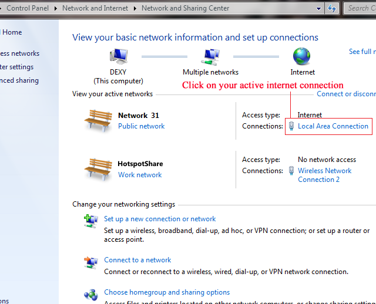
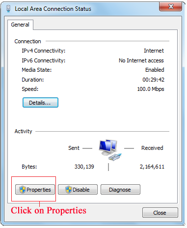
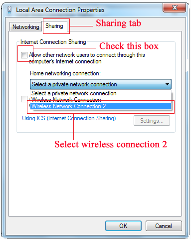

Fix for no internet access after connecting to hotspot
Open Network and Sharing Center (Via Control Panel)
Click on the blue label of your active internet connection.
( eg. Local area connection,PPOE connection, 3G-USB Connection, etc.)

Then a status box will appear, click properies.

Go to sharing tab and tick the box,"Allow other users to connect through this computer's internet connection" and select the wireless network connection 2.

Click OK and your done.